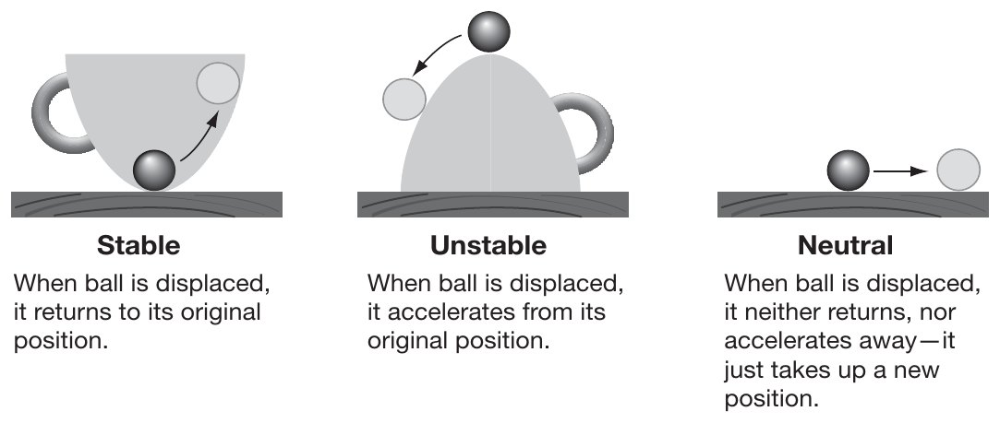
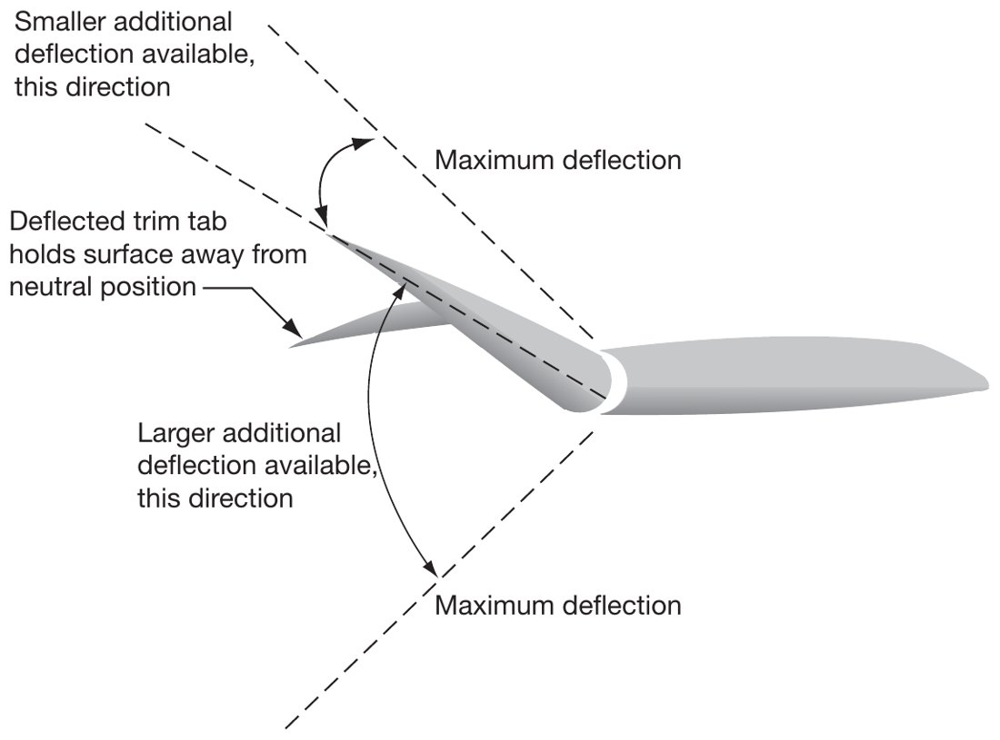
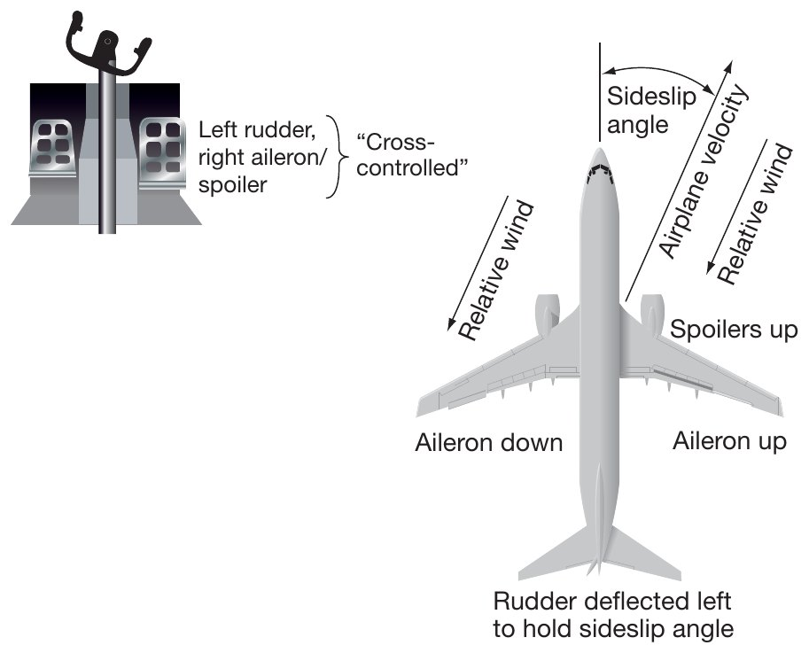

Lesson 08: Stability, Control and Rudder Use
Learning objectives
- Describe static and dynamic stability in pitch, roll and yaw.
- Explain the role of trim and the dangers of an out-of-trim condition.
- Apply correct rudder use and avoid hazardous rudder inputs.
Stability decides how the aircraft responds after a disturbance.
Static and dynamic stability
- Static stability is the initial tendency after a disturbance. Dynamic stability is what happens over time — whether the oscillations die out, continue or grow.
- Longitudinal (pitch) stability depends mainly on the centre of gravity position relative to the neutral point. Aft CG reduces it (Lesson 11).
- Lateral (roll) stability comes from wing dihedral and sweep. Swept wings produce a strong roll from sideslip (dihedral effect).
- Directional (yaw) stability comes from the vertical stabiliser. The interaction of yaw and roll produces Dutch roll, which yaw dampers suppress.

Control surface fundamentals
- Control effectiveness depends on dynamic pressure: at low speed, larger deflections are needed; at high speed, small inputs have large effects.
- Spoilers assist roll on many jets. At high angles of attack, aileron effectiveness may be reduced and adverse yaw increased.
- The horizontal stabiliser (trim) is much more powerful than the elevator. If the stabiliser is trimmed fully nose-up, the elevator alone may not be able to lower the nose.
Trim
The autopilot trims continuously. When it disconnects, the aircraft can be out of trim — for example after the autopilot has been holding a roll against an asymmetry, or trimming nose-up while speed decayed. Be ready for this whenever the autopilot disconnects. In a recovery, use pitch trim carefully to help achieve the required pitch, and do not leave the aircraft trimmed for an unsafe condition.

Rudder use
Rapid, alternating (cyclic) rudder inputs can generate loads beyond the design limits of the vertical stabiliser — even below VA. In November 2001, American Airlines Flight 587, an Airbus A300-600, encountered wake turbulence after take-off from New York. The first officer made repeated full rudder inputs from side to side. The vertical stabiliser separated and the aircraft crashed, killing 265 people.
- On swept-wing transport aeroplanes, the rudder is mainly used for asymmetric thrust, crosswind take-offs and landings, and specific procedures.
- It is not normally used to roll the aircraft in upset recovery. Roll with aileron and spoiler. Use rudder only as the manufacturer's procedure states — for example when aileron and spoiler authority is not enough.
- Large rudder inputs at high speed produce sideslip and strong roll moments.

Key takeaways
- Static stability is the first tendency; dynamic stability is the behaviour over time.
- The stabiliser is more powerful than the elevator — mis-trim can limit recovery.
- Expect an out-of-trim condition when the autopilot disconnects.
- Never make rapid alternating rudder inputs; roll with aileron and spoiler.
Knowledge check
What was the key lesson of the American Airlines 587 accident?